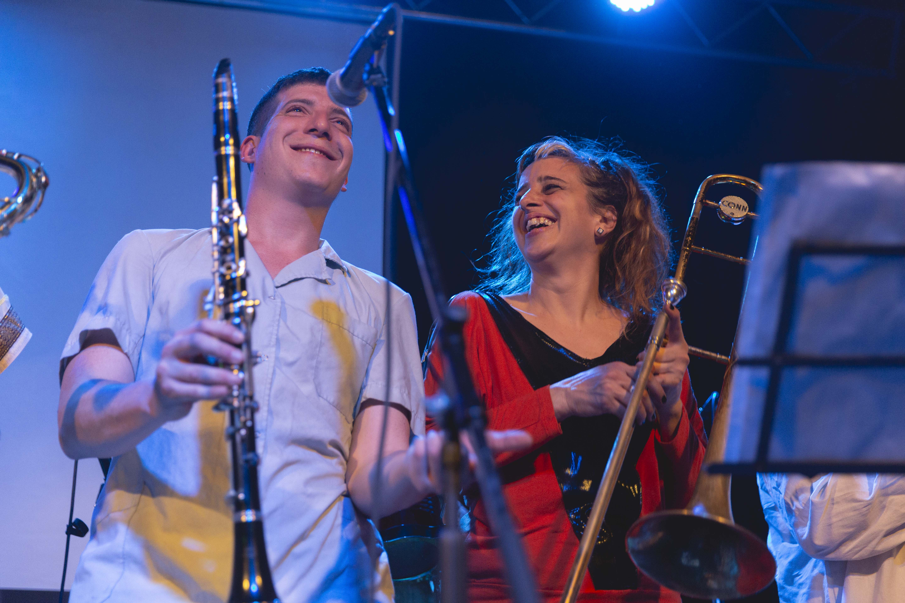
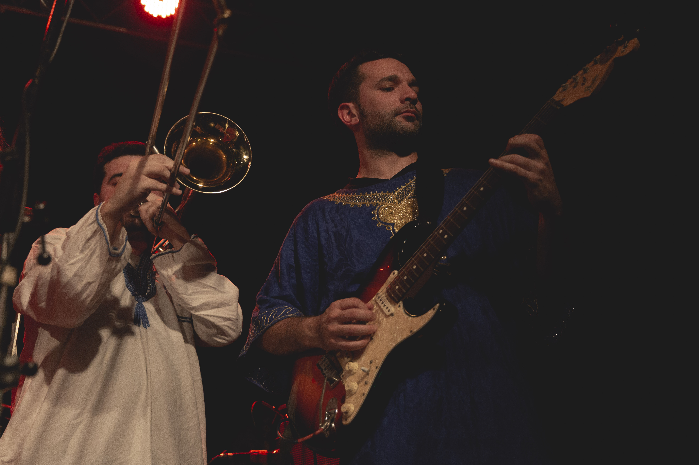
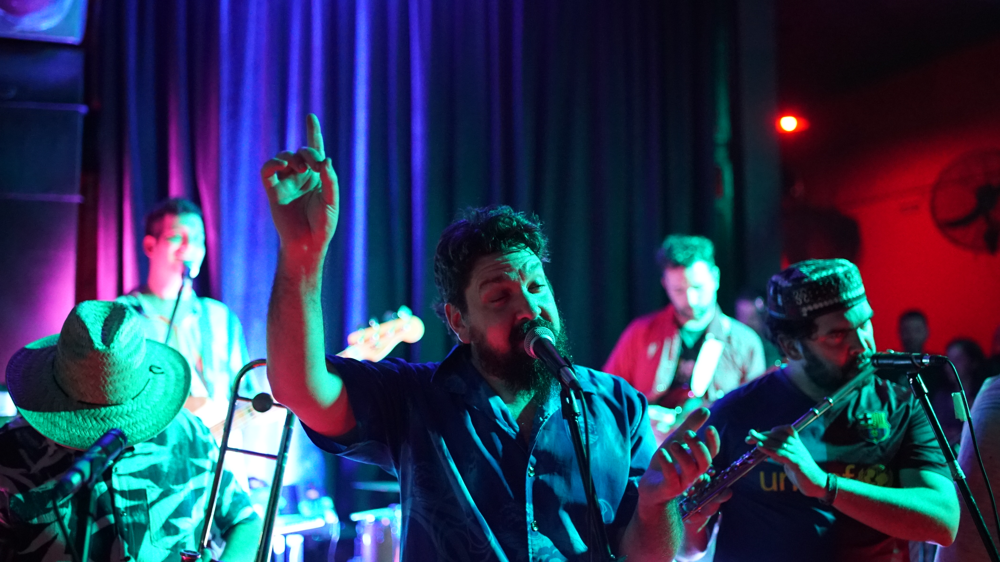
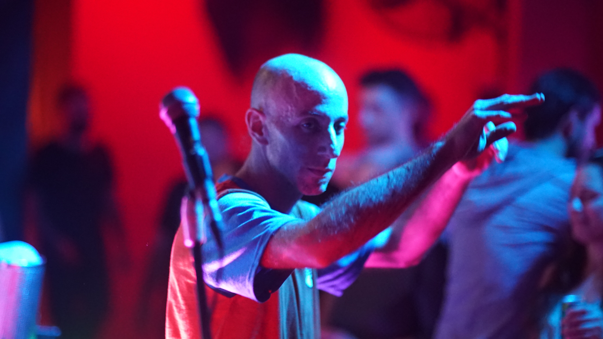
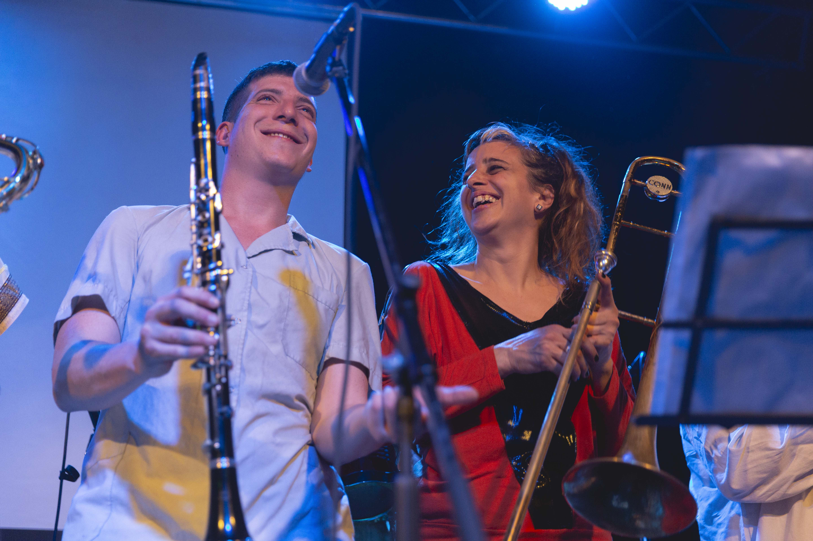
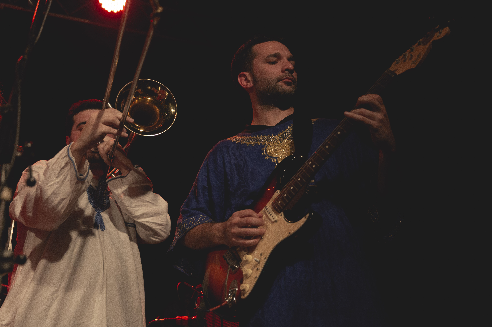
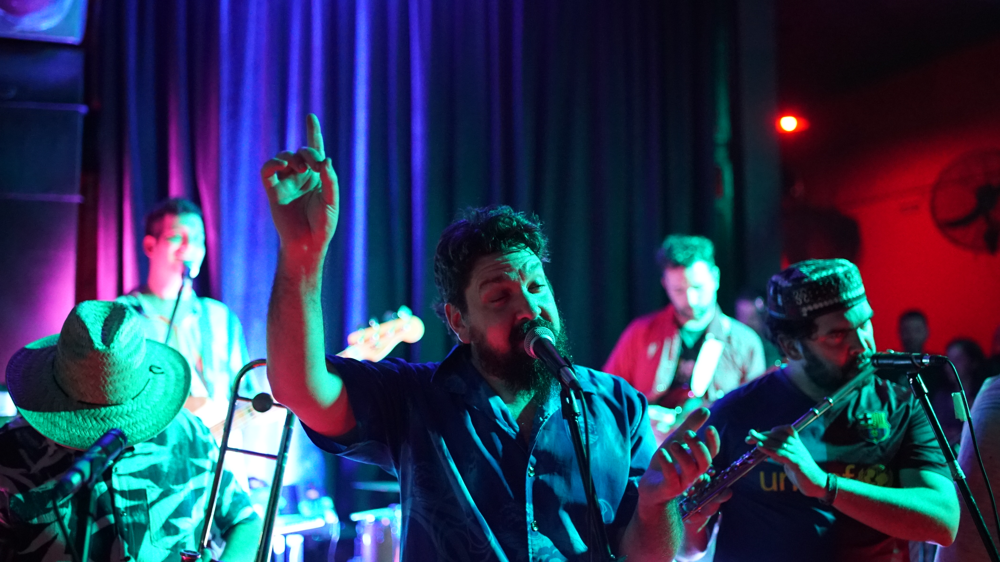
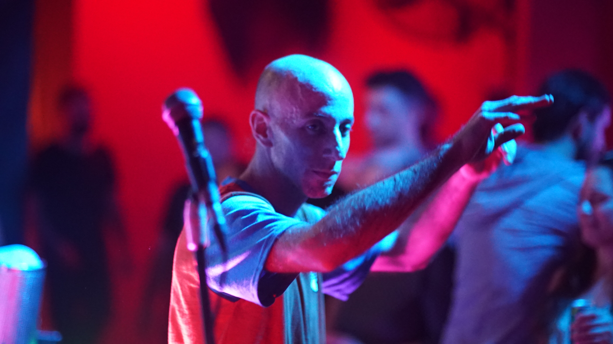

Sobre nosotrxs
Creada en el 2008, inicialmente como una banda sonora para eventos de la colectividad judía, Barbacoaj ha reemplazado su repertorio de música tradicional por uno integrado exclusivamente de composiciones propias. Los géneros musicales variopintos se funden en un estilo propio de los grupos de “rock latino” de los tardíos 90’s y los tempranos 2000.
Barbacoaj forma con 13 músicxs que ejecutan los típicos sonidos de batería, bajo, percusión, teclados y guitarras eléctricas a los que se suman los trombones, clarinetes, saxos y trompetas. Resultado de múltiples decisiones y limitaciones, su formación no ha permanecido estable por mucho tiempo, pero la identidad sonora permanece intacta -sobretodo por el oído del público que aún permanece ajeno-. Como efecto secundario, las grabaciones publicadas no reflejan ni el 10% del repertorio actual, lo cual es un incentivo para ver a la banda en vivo, donde realmente ocurre la magia.
Barbacoaj ha desfilado por salones y hoteles de todo el territorio argentino descontrolando fiestas de casamientos, bar y bat mitzvah con su repertorio de clásicos judíos. También ha participado en diversos festivales masivos judaicos como el Rosh Hashaná Urbano, Pesaj Urbano, Buenos Aires Celebra Kosher y en la AMIA.
Desde el 2014, ya con el repertorio de canciones propias, Barbacoaj recorre distintos centros culturales como el Club Cultural Matienzo, Teatro Mandril, Vuela El Pez Club de Arte, Facultad de Ciencias Sociales, Club Plasma, Feria del Libro Independiente (FLIA), Uniclub, Makena Cantina Club, La Oreja Negra, Club Premier.
En el 2016 graba su primer álbum de canciones propias titulado “Artístico”.
Con el disco bajo el brazo comienzan a tocar en locales y plazas allende la Gral. Paz como la Plaza Bme. Mitre (Ramos Mejía) la Plaza de los Aviadores (Ciudad Jardín, Palomar), Asociación Cultural Arte y Vida (Martin Coronado), Espacio Raíz (Hurlingham), Casa Cultural Reacción (Ramos Mejía), El Transformador (Haedo) Bar Mutar (Avellaneda), entre otros.
Barbacoaj es sinónimo de fiesta y alegría, es una banda que ya ha consolidado un sonido propio y que a la vez siempre está iniciando.
 









Enterate todas las novedades!
Completa el formulario para recibir información sobre Barbacoaj en tu mail y whatsapp.